```{r}# import MASS first because it otherwise will mask dplyr::selectlibrary(MASS)library(tidyverse)library(ggdendro)library(psych)library(gplots)library(pdist)library(factoextra)library(viridis)library(mclust)library(knitr)theme_set(theme_minimal())```
```{r}# Importar como tibble o arquivo de dentro da pasta chamada: dat/csv.mpe <- readr::read_csv(file ="dat/csv/MPE-GO_DP_PIB_Caged_Rais.csv",# delim = ",",quote ="\"",locale =locale(decimal_mark =".",encoding ="UTF-8" ) )# cat - Concatenate And Printcat("\n") # imprime no console (saída) uma linha em brancocat("Estrutura do objeto R denominado mpe:\n")str(mpe)cat("\n")cat("Nomes das 8 colunas do objeto mpe:\n")names(mpe)# [1] "ano" "PgtoGO_MPE" "PIB" "CAGED" "RAIS" "Pop" "DPGO_MPE_pc" "PIB_pc"# ano: vai de 2006 até 2019 (14 linhas de observações para as 8 colunas de variáveis)mpe # tibble: 14 × 8```
O significado das 8 variáveis coletadas neste Estudo Observacional de 267 do TCE-GO: o Poder das compras públicas pelo Estado de Goiás como instrumento de Política Pública de fomento às MPE’s - Micro e Pequenas Empresas (art. 179, CF/1988; arts. 44 e 45, LC n. 123/2006 - Estatuto Nacional da Microempresa e da Empresa de Pequeno Porte).1
“ano” - vai de 2006 até 2019 (são 14 linhas de observações para as 8 colunas de variáveis)
“PgtoGO_MPE” - Despesas anuais do Estado de Goiás com MPE - Micro e Pequenas Empresas (BARZELLAY; DAS NEVES, 2022 , p. 144, tabela 12), obtido do Sistema SIOFNet - Sistema de Elabroação e Execução Orcamentária e Financeira do Estado de Goiás.
“PIB” - Produto Interno Bruto do Esatado de Goiás, obtido junto ao IMB - Instituto Mauro Borges;
“CAGED” - Cadastro Geral de Empregados e Desempregados, obtido junto ao IMB - Instituto Mauro Borges, que fornece o saldo anual de empregos, ou seja, Contratações - Demissões (BARZELLAY; DAS NEVES, 2022 , p. 155);
“RAIS” - Relação Anual de Informações Sociais, obtido junto ao IMB - Instituto Mauro Borges, que fornece o número total de vínculos empregatícios ano a ano (BARZELLAY; DAS NEVES, 2022 , p. 154-155);
“Pop” - População do Estado de Goiás, [obtido junto ao IMB - Instituto Mauro Borges];
“DPGO_MPE_pc” - Despesas anuais per capta do Estado de Goiás com MPE - Micro e Pequenas Empresas, calculada, ano a ano, de 2006 a 2019, pela seguinte fórmula:
\[
DPGO\_MPE\_pc = \frac{PgtoGO\_MPE}{Pop}
\]
“PIB_pc” - Produto Interno Bruto per capta do Esatado de Goiás, calculado, ano a ano, de 2006 a 2019, pela seguinte fórmula:
\[
PIB\_pc = \frac{PIB}{Pop}
\]
5.1.3 Contexto dos dados
A figura a seguir ilustra o contexto em que se deve interpretar os dados sobre CAGED e a MPE’s no Brasil (BARZELLAY; DAS NEVES, 2022 , p. 100).
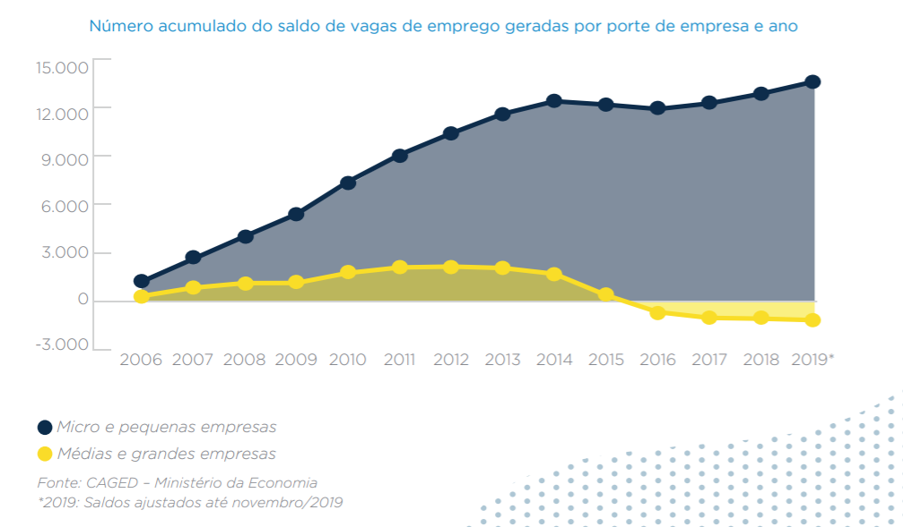
CAGED (2006 a 2019) por porte das empresas: MPE’s versus demais Empresas. Fonte: Min. Economia
Observe-se que, mesmo em príodo de crise de empregos, 2015 a 2019, as MPE’s - Micro e Pequenas Empresas são menos afetadas e tendem a sofrer quedas não tão acentuadas e mesmo recuperar-se mais rapidamente que as empresas dos demais portes (médias e grandes).
Outro aspceto relevante é a participação das MPEs no PIB Brasil (1985-2017), conforme estudo realizado pela FGV e SEBRAE.
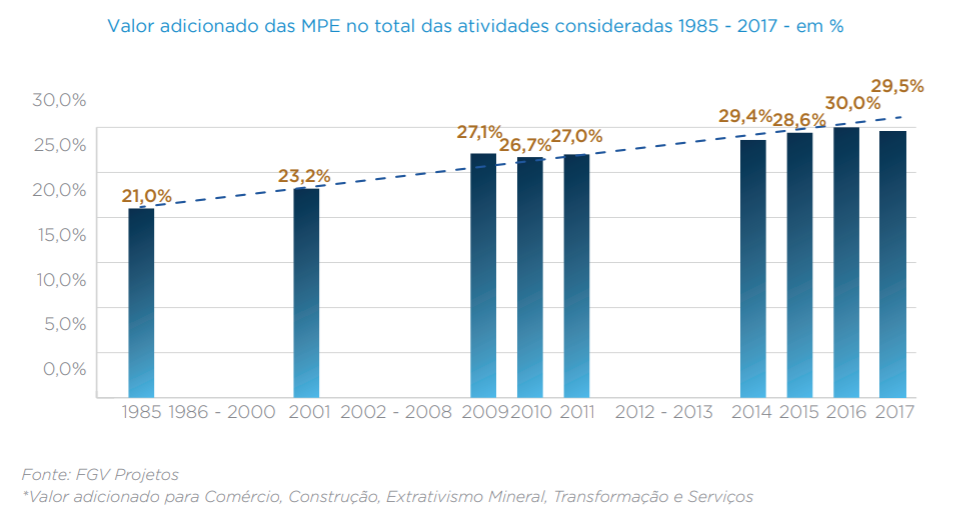
Participação das MPEs no PIB-Br (1985 a 2019). Fonte: FGV e SEBRAE
Percebe-se pouca dispersão em torno da reta tracejada (provável reta de regressão), que representa uma correlação positiva entre a proporção(%) da participação das MPE’s no PIB-Br ao longo do período observados, de 1985 a 2017, de forma consistente ao longos desses 32 anos.
Agora vamos olhar para os Valores, em reais (R$), da participação das MPEs beneficiárias de contratos nas compras públicas (licitações) de entes federais, de 2016 a 2020 (BARZELLAY; DAS NEVES, 2022 , p. 107, gráfico 2).
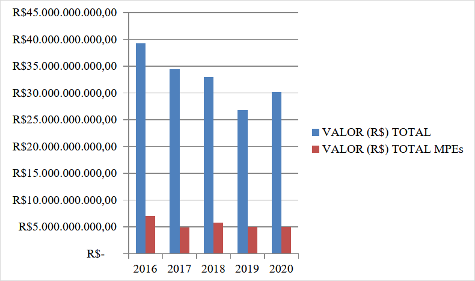
E verificar como a proporção (%) dessa participação evoluiu nesse mesmo período de tempo, (BARZELLAY; DAS NEVES, 2022 , p. 108, gráfico 4).
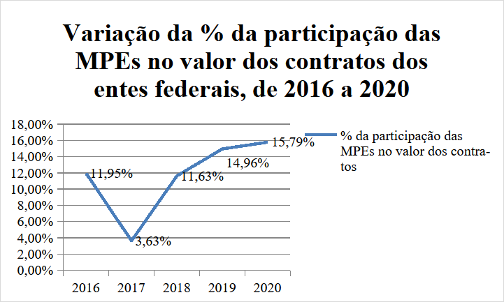
5.1.4 Explorar
Ver um resumo das possíveis relações entre cada par dessas 8 variáveis quantitativas.
Code
```{r}pairs.panels(mpe, lm=TRUE)```
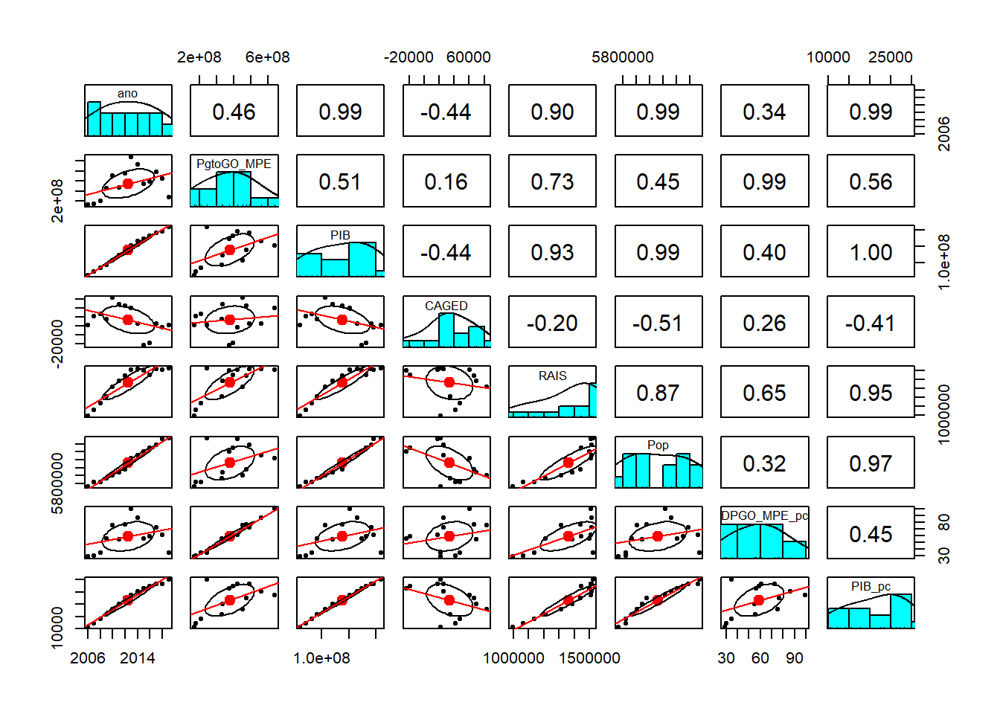
A matriz de gr[aficos acima fornece uma visão geral rápida das relações entre as variáveis e identificar quais são mais importantes.
Exibir o Nível de Significância dos coeficientes de correlação acima através de um correlograma com mapa de calor (de cores) ou hit-map para corroborar essas evidências iniciais.
Code
```{r}library(psych)library(Hmisc)library(corrplot)# Calculando correlações e p-valoresres <-rcorr(as.matrix(mpe))library(Hmisc)library(corrplot)# Calcular a matriz de correlação e os p-valoresres <-rcorr(as.matrix(mpe)) # retorna lista com r (correlações) e P (p-valores)# Gera o corrplot com personalizaçãocorrplot( res$r, # matriz de correlaçãomethod ="color", # método de visualização (pode ser "number", "circle", etc.)type ="upper", # mostra apenas a metade superiororder ="hclust", # ordena as variáveis por similaridadeaddCoef.col ="black", # adiciona os valores das correlaçõestl.col ="black", # cor dos nomes das variáveistl.srt =45, # rotação dos nomes das variáveistl.cex =0.8, # tamanho dos nomes das variáveiscol =colorRampPalette(c("red", "white", "blue"))(200), # gradiente de coresnumber.cex =0.7, # tamanho dos números e asteriscosmar =c(0,0,1,0) # margens do gráfico)# Adiciona um título ao gráfico# title("Mapa de Correlação - MPE's Goiás", line = 0.5, cex.main = 1.5)# Adiciona asteriscos manualmenten <-ncol(res$r)for(i in1:(n-1)) {for(j in (i+1):n) { pval <- res$P[i, j]if(!is.na(pval)) {if(pval <0.001) { ast <-"***" } elseif(pval <0.01) { ast <-"**" } elseif(pval <0.05) { ast <-"*" } else { ast <-"" }if(ast !="") {# Ajuste os valores de x e y para posicionar acima e à direita x <- j +0.25 y <- n - i +1+0.25text(x, y, labels = ast, col ="red", cex =1.2, font =2) } } }}# Adiciona a nota de rodapé explicando os asteriscosmtext("*** p < 0.001 ** p < 0.01 * p < 0.05",side =1, # parte inferior do gráficoline =3, # distância da margemcex =0.7, # tamanho da fonteadj =0# centralizado)```
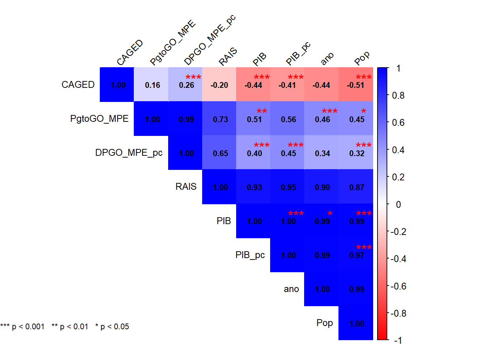
Há correlações que são esperadas, como PIB e PIB_pc, entre PIB_pc e Pop ou entre DPGO_MPE_pc e Pop, dada ao modo como foram calculados esses indicadores per capta.
5.1.5 Contexto MPE no Estado de Goiás
Proporção de órgãos públicos estaduais no valor total de compras públicas realizadas pelo Estado de Goiás ao contratar com MPEs, no período 2006 a 2019, com uma análise de Pareto.
Comparação do valor total, em reais (R$) gasto nas licitações do estado de Goiás, de 2009 a 2019, com a participação das MPEs em relação a esse total de compras públicas, (BARZELLAY; DAS NEVES, 2022 , p. 146, gráfico 17).
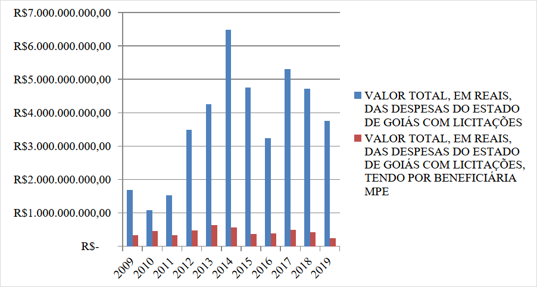
Agora a mesma informação acima expressa como proporção (%) do valor das compras públicas pagos às MPE’s em relação ao valor total das despesas do Estado de Goiás com licitações (2009 a 2019), no mesmo período de 11 anos (BARZELLAY; DAS NEVES, 2022 , p. 146, gráfico 18).
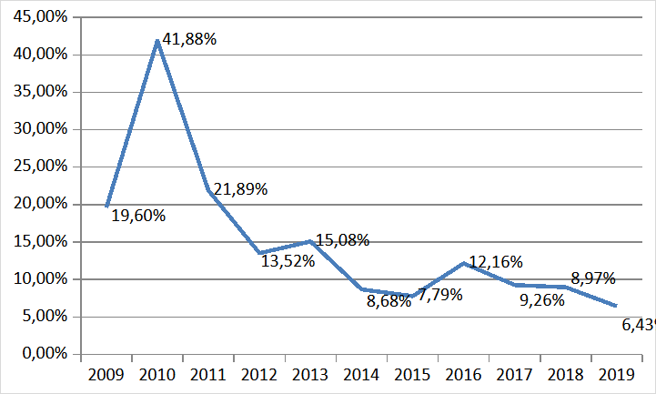
Agora é nítida a tendência de queda sistemática dessa proporção (%) desde 2010, quando chegou a 41,9%, em um ano em que claramente foi o de menor despesa pública com licitações; até 2019, quando terminou com a menor proporção registrada no período de 11 anos, com 6,4%.
Tendência essa em clara divergência com a Política Pública de fomento às MPPs preconizada no art. 179, CF/1988 e arts. 44 e 45, LC n. 123/2006 - Estatuto Nacional da Microempresa e da Empresa de Pequeno Porte).
Uma Análise de Pareto referente ao volume de recursos fiscalizados (VTF, R$) de cada um dos 28 órgãos licitantes, dos n = 267 processos cujos acórdãos foram analisados (possível viés de busca por palavras chave no site do TCE-GO), ilusta em que órgãos concentram-se as despesas públicas com MPE’s.
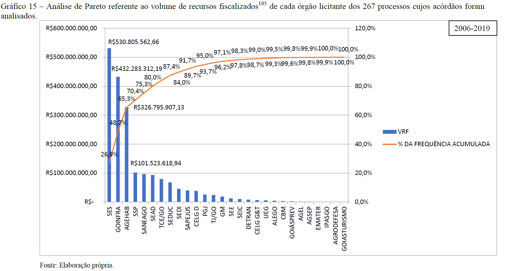
Análise de Pareto referente ao volume de recursos fiscalizados (VRF, R$) de cada órgão licitante dos 267 processos cujos acórdãos foram analisados.
Esse gráfico evidencia que 20% dos 28 órgãos, que corresponde a 0,20 x 28 = 5,6 = 6 primeiros órgãos, concentram 80% do VRF - Volume de Recursos Fiscalizados (R$) pelo TCE-GO quanto às despesas com licitação do Estado de Goiás (2006 a 2019, um período de 14 anos).
Os órgãos em que o Controle Externo do TCE-GO deveria priorizar o controle do poder das compras públicas tendo em vista o monitoramento do cumprimento da Política Pública de fomento às MPE’s são:
SES - Secretaria de Estado da Saúde
GOINFRA
AGEHAB
SSP
SANEAGO
SEAD - Secretaria de Estado da Administração
Para se ter uma ideia do alcance dessa política em relação a todas as MPE’s ativas sediadas no Estado de Goiás, do total das 629.359 (seiscentos e vinte e nove mil, trezentos e cinquenta e nove) empresas registradas como empresa de pequeno porte com endereço no Estado de Goiás, apenas 6.893 (seis mil, oitocentos e noventa e três), ou seja, 1,1% (um vírgula zero nove por cento) consta da lista das empresas beneficiadas com os empenhos realizados pelo Estado de Goiás entre 2006 e 2020.
O gráfico a seguir ilustra esse cenário.
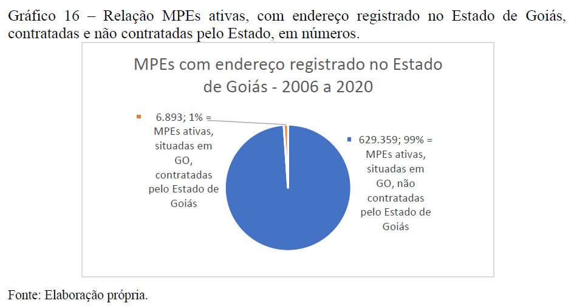
Relação MPEs ativas, com endereço registrado no Estado de Goiás, contratadas e não contratadas pelo Estado de Goiás (2006 a 2020), em números.
Apenas 1% do total de MPE’s ativas situadas no Estado de Goiás tiveram acesso à Política Pública de fomento prevista na LC n. 123/2006, o que denota um amplo espaço de alcance dessa política pública ainda sem cobertura.
5.1.6 Análise Exploratória Explicativa bivariada
5.1.6.1 Y = CAGED e X = PgtoGO_MPE
Baseia-se no estudo de uma possível relação linear entre uma variável resposta Y e uma variável explicativa X, ambas quantitativas.
Vamos considerar, inicialmente:
Y = CAGED
X = PgtoGO_MPE
Script a seguir gera um gráfico de dispersão com a reta de regressão.
Code
```{r}library(ggpubr)# dados do data frame chamado mpesummary(mpe$CAGED)# Gráfico de dispersão com reta de regressão linear, r e R²ggplot(mpe, aes(x = PgtoGO_MPE /1000000,y = CAGED /1000)) +geom_point(color ="blue", alpha =0.7) +# pontos de dispersãogeom_smooth(method ="lm", se =TRUE, color ="red") +# reta de regressão linear com intervalo de confiançastat_cor(aes(label =paste(..r.label.., ..p.label.., sep ="~`,`~")),label.x =Inf, label.y =-Inf, hjust =1.1, vjust =-0.5, size =5) +stat_regline_equation(aes(label =paste(..eq.label.., ..rr.label.., sep ="~~~")),label.x =Inf, label.y =Inf, hjust =1.1, vjust =2, size =5) +labs(title ="Gráfico de Dispersão c/Reta Regressão",subtitle ="Período: 2006 a 2019 (n = 14 obs.)",x ="PgtoGO_MPE (despesa pública GO c/MPE, milhões R$)",y ="CAGED (saldo em milhares de empregos)" ) +ylim(-30, 85) +geom_hline(yintercept =0, linetype ="dashed") +theme_minimal(base_size =14) # tema visual limpo e fonte maior```
Min. 1st Qu. Median Mean 3rd Qu. Max.
-24551 21183 29887 33585 57460 83975
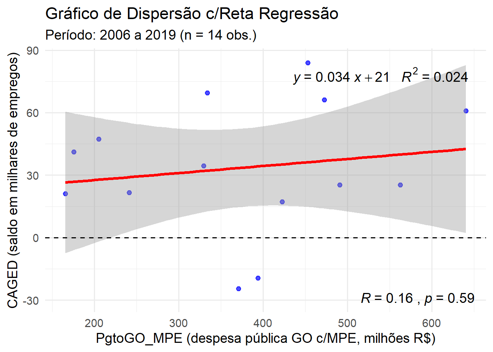
5.1.6.2 Z-score
Calcular o Z-score para os dados do data frame mpe.
Exceto para a coluna ano, para a qual não faz sentido determinar o Z-score.
Code
```{r}# Função para calcular o z-score de um vetor numéricoz_score <-function(x) {# Remove valores ausentes (NA) do cálculo da média e do desvio padrão media <-mean(x, na.rm =TRUE) desvio <-sd(x, na.rm =TRUE)# Calcula o z-score para cada elemento de x z <- (x - media) / desvioreturn(z)}# Interpretação: valores positivos estão acima da média, negativos abaixo.# Se usar essa função com um vetor contendo NA# Os NAs permanecem como NA no resultado.# deletar a variável mpe_z, caso ela existaif (exists("mpe_z")) {rm(mpe_z) # remove mpe_z, somente se ela existir}mpe # exibe o data frame mpe# Aplicar a função z_score em cada coluna do data frame mpe:# Exceto à primeira coluna ano, porque não faz sentido.mpe_z <-as.data.frame(apply(mpe[, -1], MARGIN=2, FUN=z_score))mpe_z <- mpe_z %>% dplyr::mutate(ano = mpe$ano, .before = PgtoGO_MPE)mpe_z # exibe o data frame de z-socores, acrescido da 1ª coluna ano.```
Mesmo grágfico de dispersão acima, mas agora para os escores-z das variáveis X e Y.
Code
```{r}# dados do data frame chamado mpesummary(mpe_z$CAGED)# Gráfico de dispersão com reta de regressão linear, r e R²ggplot(mpe_z, aes(x = PgtoGO_MPE,y = CAGED)) +geom_point(color ="blue", alpha =0.7) +# pontos de dispersãogeom_smooth(method ="lm", se =TRUE, color ="red") +# reta de regressão linear com intervalo de confiançastat_cor(aes(label =paste(..r.label.., ..p.label.., sep ="~`,`~")),label.x =Inf, label.y =-Inf, hjust =1.1, vjust =-0.5, size =5) +stat_regline_equation(aes(label =paste(..eq.label.., ..rr.label.., sep ="~~~")),label.x =Inf, label.y =Inf, hjust =1.1, vjust =2, size =5) +labs(title ="Gráfico de Dispersão c/Reta Regressão p/Z-scores",subtitle ="Período: 2006 a 2019 (n = 14 obs.)",x ="Z-PgtoGO_MPE (Z-score da despesa pública GO c/MPE)",y ="Z-CAGED (Z-score do saldo de empregos)" ) +xlim(-2, 2) +ylim(-2, 2) +theme_minimal(base_size =14) # tema visual limpo e fonte maior```
Min. 1st Qu. Median Mean 3rd Qu. Max.
-1.8547 -0.3957 -0.1180 0.0000 0.7617 1.6075
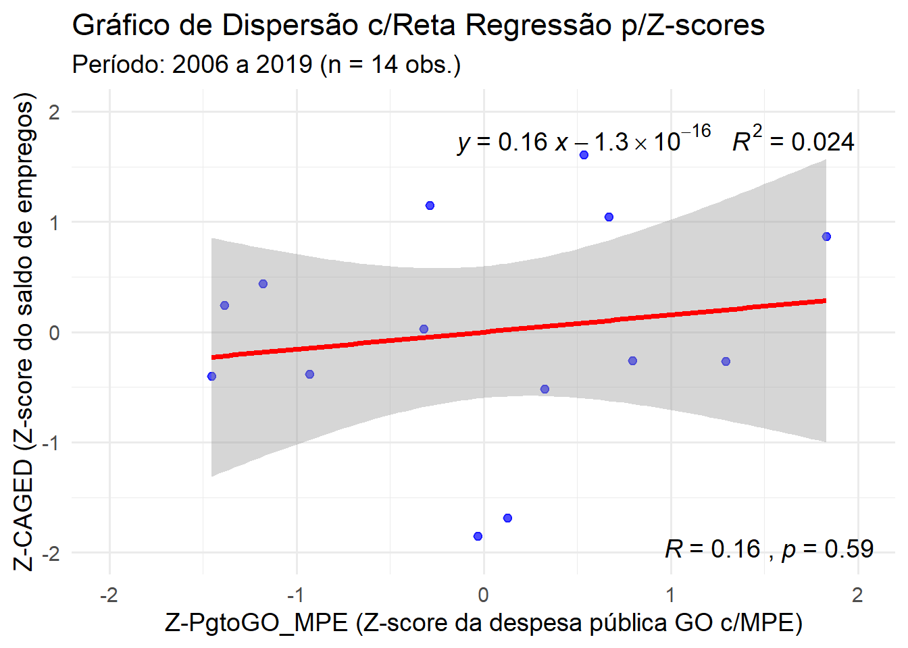
Observar que ao trasformar os valores originais em score-Z, os gráficos de dispersão e a reta de regressão não mudam de forma.
Apenas a reta de regressão fica centrada na origem, ponto (X = 0, Y = 0).
O resultado final é uma fraca correção (r = 0,16) entre Y = CAGED e X = PgtoGO_MPE.
Além disso essa correlação não é estatisticamente significativa para um nível de significância de 5% (Erro tipo I, alpha = 0,05 = 5%), poi seu valor-P = 0,59 = 59%.
5.1.6.3 Y = RAIS e X = PgtoGO_MPE
Vamos considerar, agora:
Y = RAIS
X = PgtoGO_MPE
Script a seguir gera um gráfico de dispersão com a reta de regressão.
Code
```{r}# dados do data frame chamado mpesummary(mpe$RAIS)# Gráfico de dispersão com reta de regressão linear, r e R²ggplot(mpe, aes(x = PgtoGO_MPE /1000000,y = RAIS /1000000)) +geom_point(color ="blue", alpha =0.7) +# pontos de dispersãogeom_smooth(method ="lm", se =TRUE, color ="red") +# reta de regressão linear com intervalo de confiançastat_cor(aes(label =paste(..r.label.., ..p.label.., sep ="~`,`~")),label.x =Inf, label.y =-Inf, hjust =1.1, vjust =-0.5, size =5) +stat_regline_equation(aes(label =paste(..eq.label.., ..rr.label.., sep ="~~~")),label.x =Inf, label.y =Inf, hjust =1.1, vjust =2, size =5) +labs(title ="Gráfico de Dispersão c/Reta Regressão",subtitle ="Período: 2006 a 2019 (n = 14 obs.)",x ="PgtoGO_MPE (despesa pública GO c/MPE, milhões R$)",y ="RAIS (núm. empregos, em milhões)" ) +ylim(0, 2) +theme_minimal(base_size =14) # tema visual limpo e fonte maior```
Min. 1st Qu. Median Mean 3rd Qu. Max.
992822 1235393 1442642 1361104 1508958 1524304
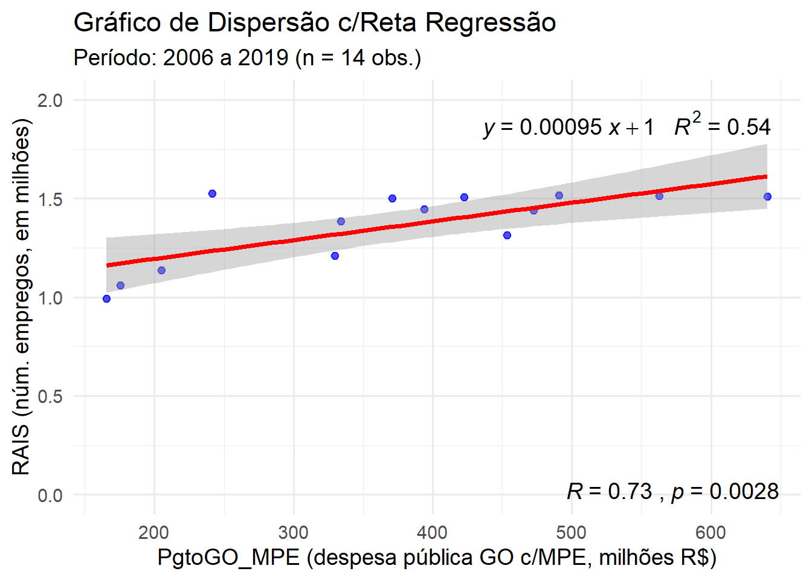
O mesmo gráfico para os já calculados escores-Z.
Code
```{r}# dados do data frame chamado mpesummary(mpe_z$RAIS)# Gráfico de dispersão com reta de regressão linear, r e R²ggplot(mpe_z, aes(x = PgtoGO_MPE,y = RAIS)) +geom_point(color ="blue", alpha =0.7) +# pontos de dispersãogeom_smooth(method ="lm", se =TRUE, color ="red") +# reta de regressão linear com intervalo de confiançastat_cor(aes(label =paste(..r.label.., ..p.label.., sep ="~`,`~")),label.x =Inf, label.y =-Inf, hjust =1.1, vjust =-0.5, size =5) +stat_regline_equation(aes(label =paste(..eq.label.., ..rr.label.., sep ="~~~")),label.x =Inf, label.y =Inf, hjust =1.1, vjust =2, size =5) +labs(title ="Gráfico de Dispersão c/Reta Regressão p/Z-scores",subtitle ="Período: 2006 a 2019 (n = 14 obs.)",x ="Z-PgtoGO_MPE (Z-score da despesa pública GO c/MPE)",y ="Z-CAGED (Z-score do saldo de empregos)" ) +xlim(-2, 2) +ylim(-2, 2) +theme_minimal(base_size =14) # tema visual limpo e fonte maior```
Min. 1st Qu. Median Mean 3rd Qu. Max.
-1.9732 -0.6735 0.4369 0.0000 0.7922 0.8744
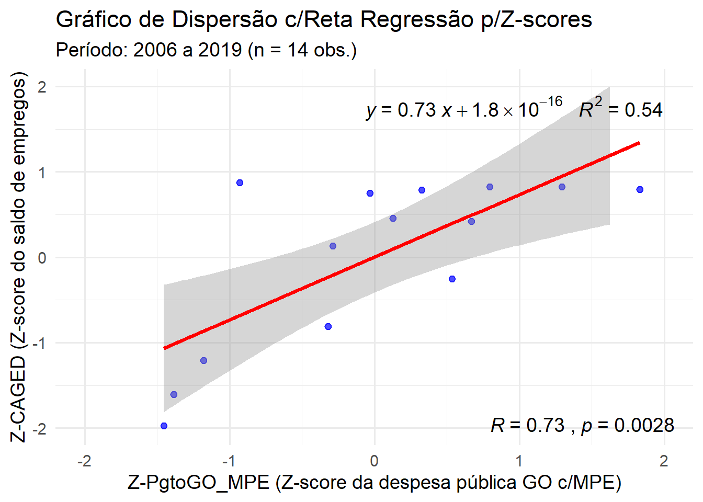
O resultado final é uma forte correção (r = 0,73) entre Y = RAIS e X = PgtoGO_MPE.
Além disso essa correlação é estatisticamente significativa para um nível de significância de 5% (Erro tipo I, alpha = 0,05 = 5%), poi seu valor-P = 0,0028 = 0,3% é menor que 5,0% = alpha.
5.1.6.4 Y = PIB e X = PgtoGO_MPE
Vamos considerar, agora:
Y = PIB
X = PgtoGO_MPE
Script a seguir gera um gráfico de dispersão com a reta de regressão.
Code
```{r}# dados do data frame chamado mpesummary(mpe$PIB)# Gráfico de dispersão com reta de regressão linear, r e R²ggplot(mpe, aes(x = PgtoGO_MPE /1000000,y = PIB /1000000)) +geom_point(color ="blue", alpha =0.7) +# pontos de dispersãogeom_smooth(method ="lm", se =TRUE, color ="red") +# reta de regressão linear com intervalo de confiançastat_cor(aes(label =paste(..r.label.., ..p.label.., sep ="~`,`~")),label.x =Inf, label.y =-Inf, hjust =1.1, vjust =-0.5, size =5) +stat_regline_equation(aes(label =paste(..eq.label.., ..rr.label.., sep ="~~~")),label.x =Inf, label.y =Inf, hjust =1.1, vjust =2, size =5) +labs(title ="Gráfico de Dispersão c/Reta Regressão",subtitle ="Período: 2006 a 2019 (n = 14 obs.)",x ="PgtoGO_MPE (despesa pública GO c/MPE, milhões R$)",y ="PIB (em milhões R$)" ) +ylim(50, 200) +theme_minimal(base_size =14) # tema visual limpo e fonte maior```
Min. 1st Qu. Median Mean 3rd Qu. Max.
61375409 96341832 145029006 138770500 179677440 208672000
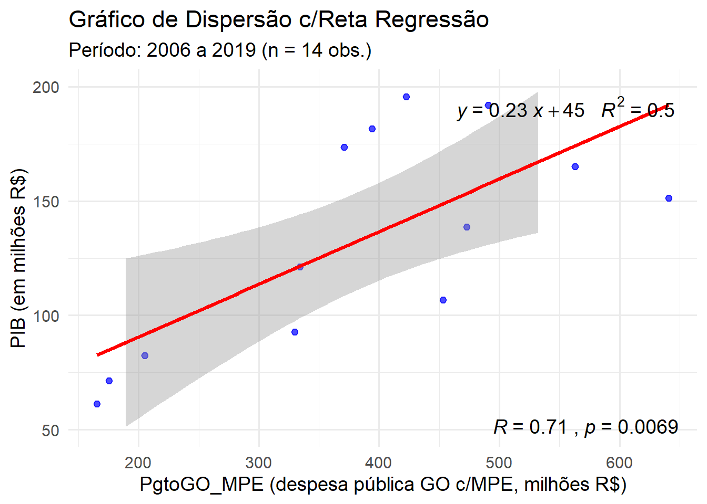
O mesmo gráfico para os já calculados escores-Z.
Code
```{r}# dados do data frame chamado mpesummary(mpe_z$PIB)# Gráfico de dispersão com reta de regressão linear, r e R²ggplot(mpe_z, aes(x = PgtoGO_MPE,y = PIB)) +geom_point(color ="blue", alpha =0.7) +# pontos de dispersãogeom_smooth(method ="lm", se =TRUE, color ="red") +# reta de regressão linear com intervalo de confiançastat_cor(aes(label =paste(..r.label.., ..p.label.., sep ="~`,`~")),label.x =Inf, label.y =-Inf, hjust =1.1, vjust =-0.5, size =5) +stat_regline_equation(aes(label =paste(..eq.label.., ..rr.label.., sep ="~~~")),label.x =Inf, label.y =Inf, hjust =1.1, vjust =2, size =5) +labs(title ="Gráfico de Dispersão c/Reta Regressão p/Z-scores",subtitle ="Período: 2006 a 2019 (n = 14 obs.)",x ="Z-PgtoGO_MPE (Z-score da despesa pública GO c/MPE)",y ="Z-PIB (Z-score do PIB-GO)" ) +xlim(-2, 2) +ylim(-2, 2) +theme_minimal(base_size =14) # tema visual limpo e fonte maior```
Min. 1st Qu. Median Mean 3rd Qu. Max.
-1.5602 -0.8553 0.1262 0.0000 0.8246 1.4091
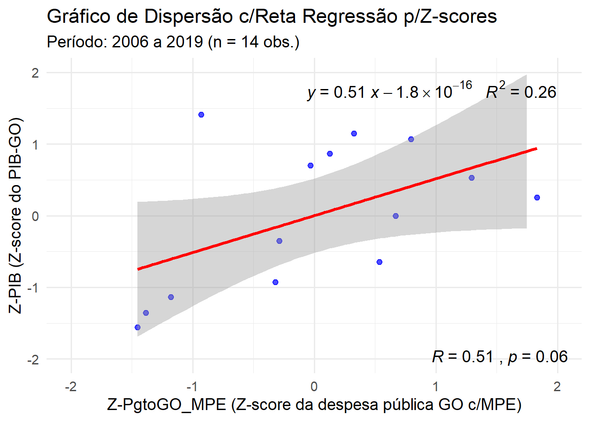
O resultado final é uma correção moderada a forte (r = 0,51) entre Y = PIB e X = PgtoGO_MPE.
Além disso essa correlação não é estatisticamente significativa para um nível de significânciade 5% (Erro tipo I, alpha = 0,05 = 5%), poi seu valor-P = 0,06 = 6,0% é maior que 5,0% = alpha.
5.1.7 Conclusão
Pelos resultados ancançados e pelos testes de significância contra a hipótese nula (r = 0), pode-se afirmar que há forte correlação entre Y = RAIS e X = PgtoGO_MPE, pois r = 0,73 e seu correspondente valor-P = 0,0028 = 0,3% é bem menor que 5,0% = alpha.
Pela reta de regressão, pode-se interpretar que para cada 1 milhão de R$ gastos anualmente com a despesa pública do Estado de Goiás em contratos públicos com MPE’s o total de empregos formais no Estado de Goiás eleva-se, em média, 0,00095 milhões = 0,95 mil = 950 empregos formais (RAIS).
O que equivaleria a um gasto médio marginal de R$1.052,63 (R$1.000.000,00/953) com MPE’s pelo Estado de Goiásparacada vaga de emprego formal efetivamente alcançada no período observado de 2006 até 2019.
Evidência que corrobora a intenção contitucional e legal de fomentar as MPE’s, a partir da consideração de que são elas as principais responsáveis pela geração de postos de trabalho no meio urbano (no meio rural esse papel fica com a agricultura familiar).
BARZELLAY, Larissa Sampaio; DAS NEVES, Cleuler Barbosa. Polı́tica pública de fomento às micro e pequenas empresas pelo poder das compras públicas no estado de goiás: Controle externo pelo TCE/GO (2006-2019). São Paulo: Editora Dialética, 2022.
Art. 44. Nas licitações será assegurada, como critério de desempate, preferência de contratação para as microempresas e empresas de pequeno porte. (Vide Lei nº 14.133, de 2021)
§ 1º Entende-se por empate aquelas situações em que as propostas apresentadas pelas microempresas e empresas de pequeno porte sejam iguais ou até 10% (dez por cento) superiores à proposta mais bem classificada.
§ 2º Na modalidade de pregão, o intervalo percentual estabelecido no § 1º deste artigo será de até 5% (cinco por cento) superior ao melhor preço.
Art. 45. Para efeito do disposto no art. 44 desta Lei Complementar, ocorrendo o empate, proceder-se-á da seguinte forma: (Vide Lei nº 14.133, de 2021
I - a microempresa ou empresa de pequeno porte mais bem classificada poderá apresentar proposta de preço inferior àquela considerada vencedora do certame, situação em que será adjudicado em seu favor o objeto licitado;
II - não ocorrendo a contratação da microempresa ou empresa de pequeno porte, na forma do inciso I do caput deste artigo, serão convocadas as remanescentes que porventura se enquadrem na hipótese dos §§ 1º e 2º do art. 44 desta Lei Complementar, na ordem classificatória, para o exercício do mesmo direito;
III - no caso de equivalência dos valores apresentados pelas microempresas e empresas de pequeno porte que se encontrem nos intervalos estabelecidos nos §§ 1º e 2º do art. 44 desta Lei Complementar, será realizado sorteio entre elas para que se identifique aquela que primeiro poderá apresentar melhor oferta.
§ 1º Na hipótese da não-contratação nos termos previstos no caput deste artigo, o objeto licitado será adjudicado em favor da proposta originalmente vencedora do certame.
§ 2º O disposto neste artigo somente se aplicará quando a melhor oferta inicial não tiver sido apresentada por microempresa ou empresa de pequeno porte.
§ 3º No caso de pregão, a microempresa ou empresa de pequeno porte mais bem classificada será convocada para apresentar nova proposta no prazo máximo de 5 (cinco) minutos após o encerramento dos lances, sob pena de preclusão.↩︎